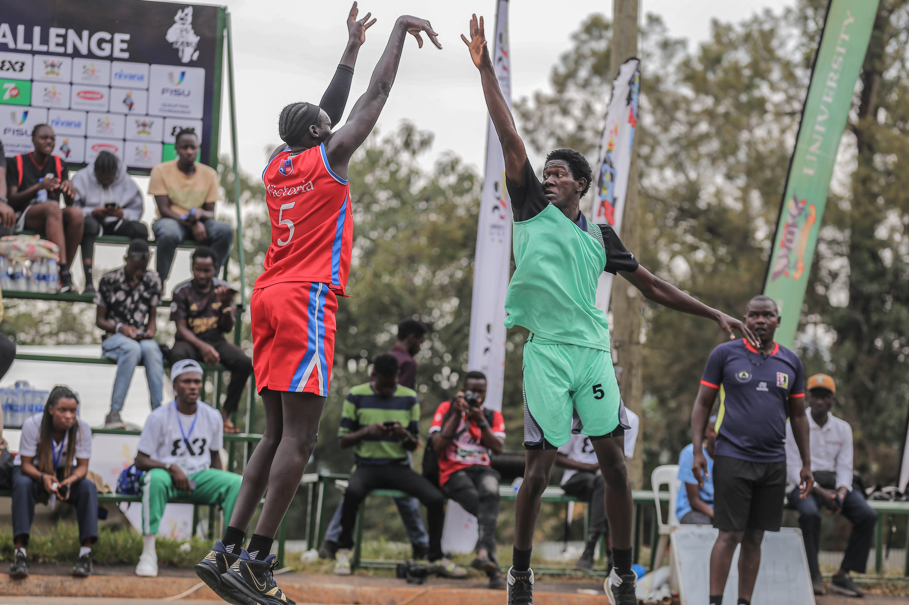
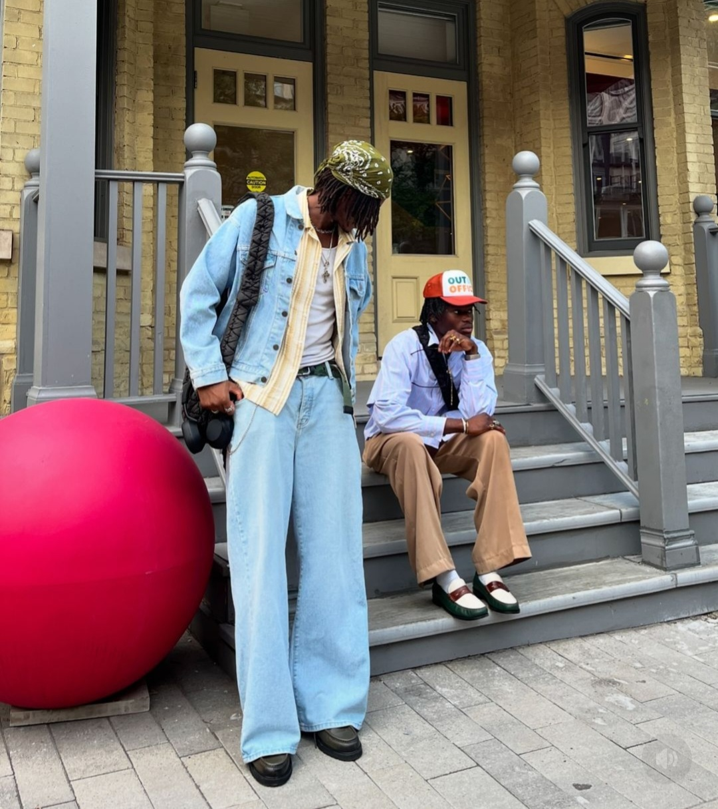
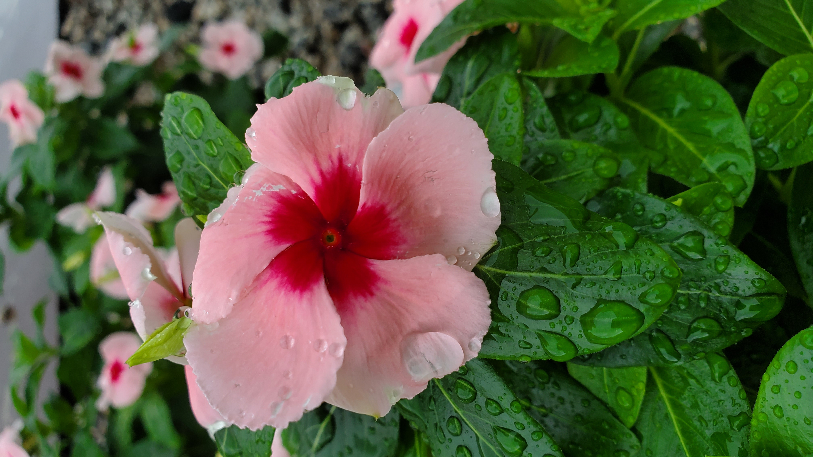

I actively participate in a variety of extracurricular activities, both within and outside of school. These activities play a significant role in enriching my life and fostering personal growth.
Basketball has been a significant part of my life since my teenage years. Growing up in a family where basketball was a common passion, my father introduced me to the sport at the age of 17, and I instantly fell in love with its dynamic nature. Eager to hone my skills, I enrolled in the Ahmentors Academy in Jalingo, where I dedicated a year to intensive training.
Building upon this foundation, I sought to further enhance my abilities and joined the Taraba Hurricanes, the state basketball team. Over the next two years, I rigorously trained alongside experienced players, striving for excellence. My dedication paid off when I successfully secured a position on the team, becoming a registered member of the Taraba Hurricanes.
Competing in various leagues and tournaments like the Be Happy Basketball tournament at Yola, the 2022 Abuja city league, and the various league 1 series that have taken place around Nigeria in the past with the Hurricanes provided invaluable experience and helped me further mature as a Basketball player. However, my academic pursuits led me to the University of Abuja, where I now balance my studies with my passion for basketball. During university breaks, I continue to contribute to the Taraba Hurricanes, while also representing my university as a member of the UNI Abuja Wildcats during the academic year.
Basketball remains an integral part of my life, providing a constant source of enjoyment and a valuable outlet for my competitive spirit. It is a passion that I cherish and strive to nurture both on and off the court.”

Fashion is more than just clothing to me, it’s a profound expression of my individuality. While many perceive clothing as merely a means of covering the body, I view it as a powerful medium for self-expression. My clothing choices reflect my personality, my mood, and my aspirations. I believe that how I present myself externally is deeply connected to my inner world.
I’ve always been fascinated by the artistry of fashion. Attending numerous fashion events, both within and outside the university, has allowed me to observe the diverse ways in which individuals express themselves through their style. The creativity, individuality, and confidence I witness at these events are truly captivating.
My passion for fashion has translated into active involvement in the university’s fashion scene. I currently serve as the Fashion Stylist for the UNI ABUJA LIGHTHOUSE, a fashion group that provides a platform for students to explore their creative expression. This role allows me to contribute to the vibrant fashion culture within the university while further honing my own understanding of style and aesthetics.
Fashion has become an integral part of my lifestyle, influencing my choices and enriching my everyday experiences. It’s a form of self-discovery and a constant source of inspiration.

Photography serves as a powerful medium for me, a means of personal expression that transcends mere documentation. Through the lens, I strive to share my unique perspective on the world, translating my thoughts, emotions, and experiences into captivating visual narratives. I am constantly amazed by the ability of photography to freeze fleeting moments in time, preserving memories and telling stories that would otherwise be lost.
To further refine my craft, I actively engage in continuous learning, pursuing online courses in photo editing and photography techniques. This ongoing pursuit of knowledge allows me to expand my technical skills and explore new creative avenues.
With my phone in hand, I often find myself capturing the beauty and intriguing world around me. Whether it’s the vibrant energy of a city and i’ts markets or the serene tranquility of nature. And yes,I find a particular satisfaction in capturing the essence of a scene, freezing a moment in time.
Photography is more than just a hobby for me, it’s a thing of great interest that fuels my creativity and allows me to connect with the world in a profound and meaningful way.
